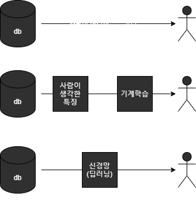
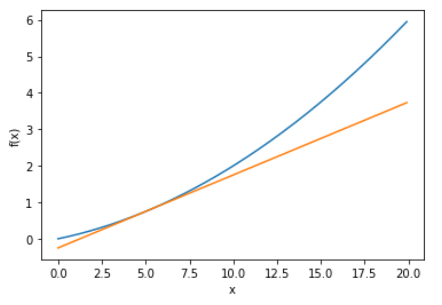
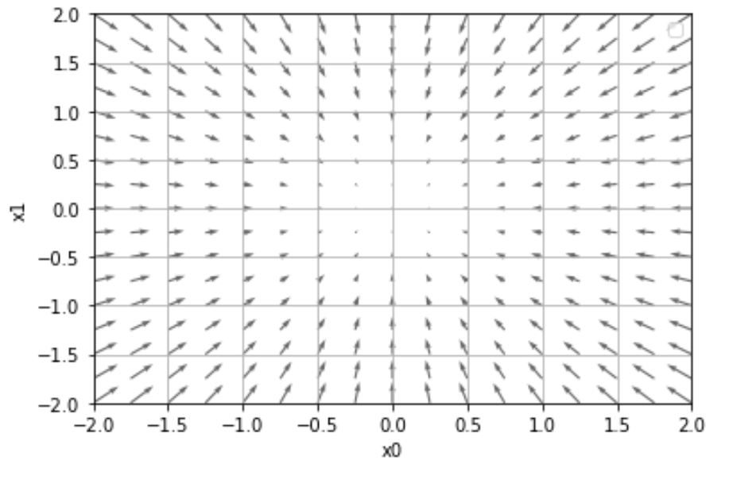
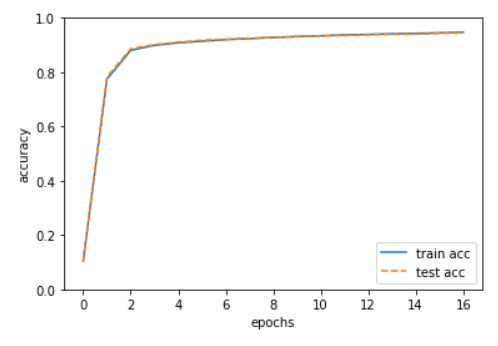

Overview
인공지능 중 신경망 학습에 대해서 다루도록 하겠습니다. 특히, 훈련 데이터로부터 가중치 매개변수의 최적값을 자동으로 획득하는 것을 뜻하는 학습과 학습 결과를 판단할 수 있는 지표인 손실 함수에 대해서 작성하였습니다.
이 글은 “밑바닥부터 시작하는 딥러닝”을 읽으면서 작성되었습니다.
예제 출처는 다음과 같습니다.github
1. 데이터 주도 학습
2. 손실 함수
3. 수치 미분
4. 기울기
5. 학습 알고리즘 구현하기
6. 마치며
데이터 주도 학습
기계학습 중 신경망은 데이터의 사람이 생각하고 파악한 특징을 분류하는 과정을 데이터 있는 그대로 활용하여 사람이 개입도 들어가지 않고, 방대한 데이터가 주어졌을 때, 분류(혹은 설계)하는 작업을 줄일 수 있습니다. 그렇게 되어 end-to-end machine learning(종단간 기계학습)이 가능하게 해주는 것 입니다.
즉, 기계가 스스로 학습을 하게되고, 특징 또한 스스로 판단할 수 있습니다. 이렇게 되면 이점은 모든 문제를 같은 맥락에서 풀 수 있다는 점에 있습니다.

훈련 데이터와 시험 데이터
책에서는 본격적인 신경망 학습 설명에 앞서, 기계학습 데이터 취급에 대해서 설명하고 있습니다. 기계학습은 훈련 데이터와 시험 데이터로 나눠 학습과 실험을 수행하는 것이 일반적입니다. 우선, 훈련 데이터만 사용하여 학습하여 최적의 매개변수를 찾고, 시험 데이터를 이용하여 평가를 합니다.
이렇게 하는 이유는 범용 능력을 제대로 평가하기 위함이라고 합니다. 범용 능력은 아직 보지 못한 데이터(훈련 데이터에 포함되지 않는 데이터)로도 문제를 올바르게 풀어내는 능력입니다. 만약 특정 데이터에 대해서 판단이 잘 된다면, 그 데이터로만 학습했을 가능성이 크며, 한 특성의 데이터에 지나치게 최적화된 상태(편견이 들어버린 상태)를 오버피팅이라고 합니다.
손실 함수
우리는 어느 것의 성능을 판단할 때, 수치를 많이 씁니다. 손실 함수는 신경망 성능의 ‘나쁨’을 나타내는 지표로 신경망이 훈련 데이터를 얼마나 잘 처리하지 못하느냐를 나타냅니다. 손실 함수는 임의의 함수를 사용하여 나타낼 수도 있지만 일반적으로 평균 제곱 오차와 교체 엔트로피 오차를 사용합니다.
평균 제곱 오차
가장 많이 쓰이는 평균제곱오차 입니다. 여기서 yk는 신경망의 출력(신경망이 추정한 값), tk는 정답 레이블, k는 데이터의 차원 수를 나타냅니다. MNIT 예시로 책에서는 설명하고 있으므로 책의 예제를 그대로 소개 하겠습니다.
y = [0.1, 0.05, 0.6, 0.0, 0.05, 0.1, 0.0, 0.1, 0.0, 0.0]
t = [0, 0, 1, 0, 0, 0, 0, 0, 0, 0,]
MNIT는 이런 데이터셋을 참고하면 됩니다. 여기서 y는 0~9의 각 값일 확률이고, t는 정답을 가리키는 원소로 여기서는 2의 위치의 값이 ‘1’이므로 정답이 ‘2’ 임을 알 수 있습니다. 평균 제곱을 결과로 확인하면 다음과 같습니다.
def mean_squared_error(y, t):
return 0.5 * np.sum((y-t)**2)
# '2' 를 가장 높은 확률로 추정함
y = [0.1, 0.05, 0.6, 0.0, 0.05, 0.1, 0.0, 0.1, 0.0, 0.0]
t = [0, 0, 1, 0, 0, 0, 0, 0, 0, 0,]
mean_squared_error(np.array(y), np.array(t))
>>> 0.09750000000000003
# '7'을 가장 높은 확률로 추정함
y = [0.1, 0.05, 0.1, 0.0, 0.05, 0.1, 0.0, 0.6, 0.0, 0.0]
mean_squared_error(np.array(y), np.array(t))
>>> 0.5975
여기서 평균제곱오차 기준으로 첫 추정 결과가 오차가 적으므로 더 정답에 가까운 판단으로 알 수 있습니다.
교차 엔트로피 오차
교차 엔트로피 오차도 자주 이용한다고 합니다. 수식을 보듯이 tk는 0 또는 1인(원-핫 인코딩) 값이므로 정답에 의해 오차율이 결정되는 간단한 식입니다. 특히 정답에 가까울 수록 0에 가까운 특징을 가지므로 확인도 편합니다. 코드로 표현하면 다음과 같습니다.
def cross_entropy_error(y, t):
delta = 1e-7
return -np.sum(t * np.log(y + delta))
# '2' 를 가장 높은 확률로 추정함
y = [0.1, 0.05, 0.6, 0.0, 0.05, 0.1, 0.0, 0.1, 0.0, 0.0]
t = [0, 0, 1, 0, 0, 0, 0, 0, 0, 0,]
cross_entropy_error(np.array(y), np.array(t))
>>> 0.510825457099338
# '7'을 가장 높은 확률로 추정함
y = [0.1, 0.05, 0.1, 0.0, 0.05, 0.1, 0.0, 0.6, 0.0, 0.0]
cross_entropy_error(np.array(y), np.array(t))
>>> 2.302584092994546
delta 값을 넣어준 이유는 np.log 에서 0을 입력하면 마이너스 무한대를 뜻하므로 계산을 할 수 없게 됩니다. 결과를 분석하면 낮은 값을 가질 수록 정답에 가깝다고 판단할 수 있습니다.
미니배치
모든 데이터의 경우에 대하여 손실함수를 구하는데 시간이 많이 걸릴 경우 일부를 추려 ‘근사치’로 이용을 한다고 합니다. 이 때 이용하는 것이 미니 배치 학습이라고 합니다. 이는 통계적으로 모든 세대에 대한 텔레비전 시청률을 구할 때 1,000 가구를 대상으로 측정하는 하여 근사하는 것과 같은 원리입니다. 코드로 표현하면 다음과 같습니다.
import sys, os
sys.path.append(os.pardir)
import numpy as np
from dataset.mnist import load_mnist
def cross_entropy_error(y,t):
if y.ndim == 1:
t = t.reshape(1,t.size)
y = y.reshape(1.y.size)
batch_size = y.shape[0]
return -np.sum(np.log(y[np.arrange(batch_size), t])) / batch_size
(x_train, t_train), (x_test, t_test) = load_mnist(normalize=True, one_hot_label=True)
train_size = x_train.shape[0]
batch_size = 10
batch_mask = np.random.choice(train_size, batch_size)
x_batch = x_train[batch_mask]
t_batch = t_train[batch_mask]
손실 함수를 사용하는 이유
손실함수 사용하는 이유는 신경망 학습에 있어서 미분의 역할이 중요합니다. 최적의 매개변수(손실함수 값이 작은 변수)를 찾기 위해서는 매개변수의 변하는 값을 미분하여 미분 값을 기반으로 매개변수를 갱신합니다. 이러한 원리로 매개변수의 손실 함수의 값을 갱신한다고 하면 미분 값이 양수면 매개변수 값을 줄여 손실율을 줄이고 음수이면 매개변수 값을 늘려 손실 함수의 값을 줄일 수 있습니다. 이러한 방법으로 최적의 매개변수를 찾을 수 있습니다. 만약 손실 함수가 아닌 정확도로 찾게 되면 정확도의 경우는 매개변수의 대부분 장소에서 0이 되기 때문입니다.이 경우에는 매개변수를 더이상 갱신할 수 없게 됩니다.
시그모이드 함수는 어느 장소라도 0이 되지 않는 성질을 가지고 있는다고 한다.
수치 미분
경사법에서 기울기 값을 기준으로 나아갈 값을 정합니다. 이를 위해 기울기를 알아야하고, 기울기를 알기 위해 미분을 복습하겠습니다.
수치 미분은 어느 한 지점의 수치적인 차분을 계산하여 변화량을 알아내는 것을 의미합니다. 아래 이미지를 참고하시기를 부탁 드립니다.
미분
미분은 수식에서 보든이 아주 작은 h 변화 동안 함수 f(x)의 변화량 입니다. 이를 구현하면 다음과 같습니다.
def numerical_diff(f, x):
h = 10e-50
return (f(x+h) - f(x)) / (h)
이 수식의 문제점은 10e-50에 있습니다. 코드를 float32로 나타내면 0.0이 됩니다. h를 무한히 좁히는 것이 불가능해 생기는 한계입니다. 이를 위하여 차분을 이용하여 다음과 같이 나타냅니다.
def numerical_diff(f, x):
h = 1e-4 # 0.0001
return (f(x+h) - f(x-h)) / (2*h)
이 차분은 x를 기점으로 h 전후 차분을 계산한다는 의미에서 중심 차분 혹은 중앙 차분이라 합니다.
다음 함수에 대해서 미분을 하여 확인하면 미분의 의미는 해당 기울기로 지나는 접선임을 알 수 있습니다.
# coding: utf-8
import numpy as np
import matplotlib.pylab as plt
def numerical_diff(f, x):
h = 1e-4 # 0.0001
return (f(x+h) - f(x-h)) / (2*h)
def function_1(x):
return 0.01*x**2 + 0.1*x
def tangent_line(f, x):
d = numerical_diff(f, x)
print(d)
y = f(x) - d*x
return lambda t: d*t + y
x = np.arange(0.0, 20.0, 0.1)
y = function_1(x)
plt.xlabel("x")
plt.ylabel("f(x)")
tf = tangent_line(function_1, 5)
y2 = tf(x)
plt.plot(x, y)
plt.plot(x, y2)
plt.show()

편미분
변수 두개가 있을 경우 한쪽에 대하여 미분을 하는 것을 편미분 이라고 합니다. 예를 들어 다음과 같은 함수가 있을 경우 x1에 대하여 미분을 d/dx1, x0이 대하여 미분을 d/x0라고 표현합니다. 이를 구현하면 다음과 같습니다.
def _numerical_gradient_no_batch(f, x):
h = 1e-4 # 0.0001
grad = np.zeros_like(x) # x와 형상이 같은 배열을 생성
for idx in range(x.size):
tmp_val = x[idx]
# f(x+h) 계산
x[idx] = float(tmp_val) + h
fxh1 = f(x)
# f(x-h) 계산
x[idx] = tmp_val - h
fxh2 = f(x)
grad[idx] = (fxh1 - fxh2) / (2*h)
x[idx] = tmp_val # 값 복원
return grad
def numerical_gradient(f, X):
if X.ndim == 1:
return _numerical_gradient_no_batch(f, X)
else:
grad = np.zeros_like(X)
for idx, x in enumerate(X):
grad[idx] = _numerical_gradient_no_batch(f, x)
return grad
def function_2(x):
if x.ndim == 1:
return np.sum(x**2)
else:
return np.sum(x**2, axis=1)
def tangent_line(f, x):
d = numerical_gradient(f, x)
print(d)
y = f(x) - d*x
return lambda t: d*t + y
if __name__ == '__main__':
x0 = np.arange(-2, 2.5, 0.25)
x1 = np.arange(-2, 2.5, 0.25)
X, Y = np.meshgrid(x0, x1)
X = X.flatten()
Y = Y.flatten()
grad = numerical_gradient(function_2, np.array([X, Y]) )
plt.figure()
plt.quiver(X, Y, -grad[0], -grad[1], angles="xy",color="#666666")#,headwidth=10,scale=40,color="#444444")
plt.xlim([-2, 2])
plt.ylim([-2, 2])
plt.xlabel('x0')
plt.ylabel('x1')
plt.grid()
plt.legend()
plt.draw()
plt.show()

기울기
기울기란 무엇일까요? 책에서는 위의 그래프처럼 기울기가 가리키는 곳은 각 장소에서 함수의 출력 값을 가장 크게 줄이는 방향으로 설명하고 있습니다. 우리가 필요한 것은 손실률을 줄이는 방법으로 최적의 매개변수를 찾는 것이고, 화살표 방향으로 매개변수를 최적화해 나가는 작업을 말합니다.
경사법
경사법은 지금까지 배운 미분을 이용합니다. 현 위치에서 기울어진 방향으로 일정 거리만큼 이동합니다. 그런 다음 이동한 곳에서도 마찬가지로 기울기를 구하고, 또 그 기울어진 방향으로 나아가기를 반복합니다. 이렇게 해서 함수의 값을 점차 줄이는 것이 경사법입니다.
경사법을 수식으로 나타내면 다음과 같습니다.
n기호는 에타이며 갱신하는 양을 나타냅니다. 이를 신경망에서 학습률이라고 표현합니다. 이 값이 너무 크거나 작으면 좋은 장소를 찾아갈 수 없습니다. 보통 이 값을 변경하면서 올바르게 학습하고 있는지를 확인하면서 진행합니다.
이를 구현하면 다음과 같습니다.
def gradient_descent(f, init_x, lr=0.01, step_num=100):
x = init_x
x_history = []
for i in range(step_num):
x_history.append( x.copy() )
grad = numerical_gradient(f, x)
x -= lr * grad
return x, np.array(x_history)
여기서 step_num 은 반복 횟수를 의미합니다. lr 에타 * 기울기 만큼 x를 변화하면서 반복해서 미분을 하는 것을 확인할 수 있습니다.
신경망에서의 기울기
신경망에서 기울기를 다음 예제를 통해 학습합니다. 다음 예제는 softmax 함수를 사용하며, 손실율은 엔트로피로 구합니다.
# coding: utf-8
import sys, os
sys.path.append(os.pardir) # 부모 디렉터리의 파일을 가져올 수 있도록 설정
import numpy as np
from common.functions import softmax, cross_entropy_error
from common.gradient import numerical_gradient
class simpleNet:
def __init__(self):
self.W = np.random.randn(2,3) # 정규분포로 초기화
def predict(self, x):
return np.dot(x, self.W)
def loss(self, x, t):
z = self.predict(x)
y = softmax(z)
loss = cross_entropy_error(y, t)
return loss
x = np.array([0.6, 0.9])
t = np.array([0, 0, 1])
net = simpleNet()
f = lambda w: net.loss(x, t)
dW = numerical_gradient(f, net.W)
print(dW)
[[ 0.16895522 0.39775333 -0.56670855]
[ 0.25343283 0.59662999 -0.85006282]]
위 예제를 통해 나온 기울기 결과를 보면 w11을 h만큼 증가시키면 손실함수 값은 0.16h만큼 변화합니다.
w13을 h만큼 증가시키면 손실함수 값은 -0.56h만큼 변화합니다.
이를통해 기울기를 확인하면 손실함수를 얼마나 어느 방향으로 영향을 줄 수 있는지 알 수 있습니다.
학습 알고리즘 구현하기
그동안 기초(‘손실 함수’, ‘미니 배치’, ‘기울기’, ‘경사 하강법’)에 대하여 학습하였습니다. 실제 신경망 학습은 다음 이미지 단계로 진행 됩니다.
처음에는 시작으로 2층 신경망 클래스 구현으로 시작합니다. 예제를 통해 알아보겠습니다.
# coding: utf-8
import sys, os
sys.path.append(os.pardir) # 부모 디렉터리의 파일을 가져올 수 있도록 설정
from common.functions import *
from common.gradient import numerical_gradient
class TwoLayerNet:
def __init__(self, input_size, hidden_size, output_size, weight_init_std=0.01):
# 가중치 초기화
self.params = {}
self.params['W1'] = weight_init_std * np.random.randn(input_size, hidden_size)
self.params['b1'] = np.zeros(hidden_size)
self.params['W2'] = weight_init_std * np.random.randn(hidden_size, output_size)
self.params['b2'] = np.zeros(output_size)
def predict(self, x):
W1, W2 = self.params['W1'], self.params['W2']
b1, b2 = self.params['b1'], self.params['b2']
a1 = np.dot(x, W1) + b1
z1 = sigmoid(a1)
a2 = np.dot(z1, W2) + b2
y = softmax(a2)
return y
# x : 입력 데이터, t : 정답 레이블
def loss(self, x, t):
y = self.predict(x)
return cross_entropy_error(y, t)
def accuracy(self, x, t):
y = self.predict(x)
y = np.argmax(y, axis=1)
t = np.argmax(t, axis=1)
accuracy = np.sum(y == t) / float(x.shape[0])
return accuracy
# x : 입력 데이터, t : 정답 레이블
def numerical_gradient(self, x, t):
loss_W = lambda W: self.loss(x, t)
grads = {}
grads['W1'] = numerical_gradient(loss_W, self.params['W1'])
grads['b1'] = numerical_gradient(loss_W, self.params['b1'])
grads['W2'] = numerical_gradient(loss_W, self.params['W2'])
grads['b2'] = numerical_gradient(loss_W, self.params['b2'])
return grads
# def gradient(self, x, t):
# W1, W2 = self.params['W1'], self.params['W2']
# b1, b2 = self.params['b1'], self.params['b2']
# grads = {}
# batch_num = x.shape[0]
# # forward
# a1 = np.dot(x, W1) + b1
# z1 = sigmoid(a1)
# a2 = np.dot(z1, W2) + b2
# y = softmax(a2)
# # backward
# dy = (y - t) / batch_num
# grads['W2'] = np.dot(z1.T, dy)
# grads['b2'] = np.sum(dy, axis=0)
# da1 = np.dot(dy, W2.T)
# dz1 = sigmoid_grad(a1) * da1
# grads['W1'] = np.dot(x.T, dz1)
# grads['b1'] = np.sum(dz1, axis=0)
# return grads
예제를 확인하였을 때, init을 통해 우선 클래스를 초기화(가중치 매개변수, 입력층 갯수, 히든층 갯수, 출력층 갯수) 합니다. predict 메소드를 통해 값을 추정하며, accuracy, loss 메소드를 통해 학습 결과를 지표로 나타냅니다. 그리고 numerical_gradient를 통해 기울기를 계산할 수 있습니다. 참고로 주석처리 된 gradient는 다음 장에서 소개한다고 합니다. 이는 오차역전파법을 사용하여 기울기를 효율적이고 빠르게 계산한다고 합니다.
이제 신경망 클래스가 구현되었으니, mnist 예제에 대하여 미니배치를 통해 학습하고 평가하는 과정을 진행하겠습니다. 여기서 에폭이라는 용어가 나오는데, 이 에폭은 학습에서 훈련 데이터를 모두 소진했을 때의 횟수에 해당합니다. 미니배치로 100회를 정하였을 경우 100이 1에폭에 해당하게 됩니다.
# coding: utf-8
import sys, os
sys.path.append(os.pardir) # 부모 디렉터리의 파일을 가져올 수 있도록 설정
import numpy as np
import matplotlib.pyplot as plt
from dataset.mnist import load_mnist
from two_layer_net import TwoLayerNet
# 데이터 읽기
(x_train, t_train), (x_test, t_test) = load_mnist(normalize=True, one_hot_label=True)
network = TwoLayerNet(input_size=784, hidden_size=50, output_size=10)
# 하이퍼파라미터
iters_num = 10000 # 반복 횟수를 적절히 설정한다.
train_size = x_train.shape[0]
batch_size = 100 # 미니배치 크기
learning_rate = 0.1
train_loss_list = []
train_acc_list = []
test_acc_list = []
# 1에폭당 반복 수
iter_per_epoch = max(train_size / batch_size, 1)
for i in range(iters_num):
# 미니배치 획득
batch_mask = np.random.choice(train_size, batch_size)
x_batch = x_train[batch_mask]
t_batch = t_train[batch_mask]
# 기울기 계산
#grad = network.numerical_gradient(x_batch, t_batch)
grad = network.gradient(x_batch, t_batch)
# 매개변수 갱신
for key in ('W1', 'b1', 'W2', 'b2'):
network.params[key] -= learning_rate * grad[key]
# 학습 경과 기록
loss = network.loss(x_batch, t_batch)
train_loss_list.append(loss)
# 1에폭당 정확도 계산
if i % iter_per_epoch == 0:
train_acc = network.accuracy(x_train, t_train)
test_acc = network.accuracy(x_test, t_test)
train_acc_list.append(train_acc)
test_acc_list.append(test_acc)
print("train acc, test acc | " + str(train_acc) + ", " + str(test_acc))
# 그래프 그리기
markers = {'train': 'o', 'test': 's'}
x = np.arange(len(train_acc_list))
plt.plot(x, train_acc_list, label='train acc')
plt.plot(x, test_acc_list, label='test acc', linestyle='--')
plt.xlabel("epochs")
plt.ylabel("accuracy")
plt.ylim(0, 1.0)
plt.legend(loc='lower right')
plt.show()
Converting train-images-idx3-ubyte.gz to NumPy Array …
Done
Converting train-labels-idx1-ubyte.gz to NumPy Array …
Done
Converting t10k-images-idx3-ubyte.gz to NumPy Array …
Done
Converting t10k-labels-idx1-ubyte.gz to NumPy Array …
Done
Creating pickle file …
Done! train acc, test acc | 0.10441666666666667, 0.1028
train acc, test acc | 0.7746166666666666, 0.7824
train acc, test acc | 0.88065, 0.8863
train acc, test acc | 0.8992333333333333, 0.9016
train acc, test acc | 0.9083166666666667, 0.9111
train acc, test acc | 0.9142166666666667, 0.9175
train acc, test acc | 0.9198666666666667, 0.9215
train acc, test acc | 0.9239833333333334, 0.9242
train acc, test acc | 0.9280166666666667, 0.9281
train acc, test acc | 0.9312833333333334, 0.9311
train acc, test acc | 0.9341333333333334, 0.9338
train acc, test acc | 0.9373, 0.935
train acc, test acc | 0.9392833333333334, 0.9378
train acc, test acc | 0.9414, 0.9391
train acc, test acc | 0.9428166666666666, 0.9403
train acc, test acc | 0.9450333333333333, 0.9429
train acc, test acc | 0.9471666666666667, 0.9449

미니배치를 100회로 지정하고 반복 횟수를 10000회로 설정합니다. 그래프를 확인하면 훈련데이터와 출력데이터 모두 정확도가 차이나지 않습니다. 이는 오버피팅이 일어나지 않았음을 의미합니다. 또한 학습을 반복할 수록 정확도가 올라가는 것을 확인할 수 있습니다.
마치며
읽어주셔서 감사합니다. “밑바닥부터 시작하는 딥러닝”을 읽으면서 작성하였기 때문에, 부족한 내용이 많습니다. 자세한 내용은 해당 책을 참고하시기를 부탁 드립니다.
{kind=link}